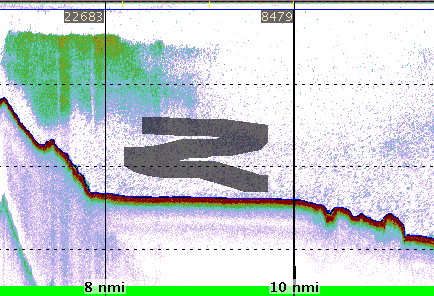

Sometimes it is necessary to delete some data from the interpretation. It may be that some frequencies have erroneous pings, or that data has to be deleted because of artifacts near the bottom or the surface.
Pressing the  toolbar button enters the deletion mode.
The deleted area will be marked as a grayed out
area on the echogram.
Deleted data points are not used by any calculations in any of the modules.
toolbar button enters the deletion mode.
The deleted area will be marked as a grayed out
area on the echogram.
Deleted data points are not used by any calculations in any of the modules.
Keyboard commands:
| Keystroke | Description |
|---|---|
| + - |
Changes size of the eraser |
| Spacebar | Changes deletion mode
|
| Ctrl + Spacebar | Changes draw mode
|
